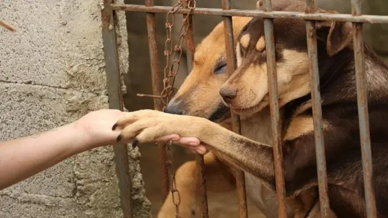

Adote um Amigo
Conheça os cães disponíveis para adoção e mude uma vida hoje. O processo é simples e responsável.
Ver CãesNossa missão é resgatar, reabilitar e encontrar lares amorosos para cães abandonados nas ruas de nossa cidade. Acreditamos que todo animal merece uma segunda chance.
O abandono animal é um problema grave que combatemos todos os dias. Com a sua ajuda, podemos oferecer cuidados veterinários, alimentação de qualidade e muito amor até que encontrem suas novas famílias.
Conheça os cães disponíveis para adoção e mude uma vida hoje. O processo é simples e responsável.
Ver CãesSeja um padrinho e ajude a cobrir custos de alimentação e veterinário. Qualquer valor faz a diferença.
Quero Doar